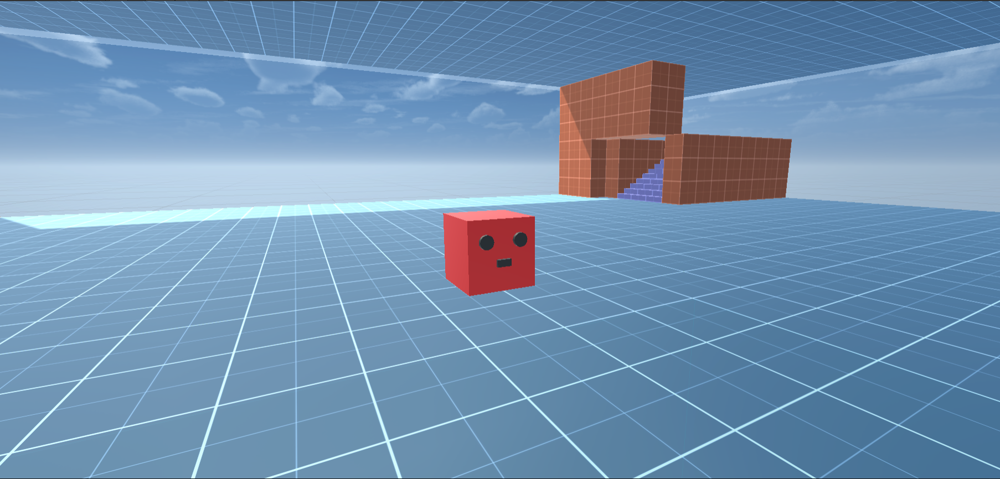

ポスターをご覧くださり、ありがとうございます。こちらのサイトでは、ポスターでは説明しきれなかった部分までの解説や、ポスターにはない資料も公開しています。
ポスターのダウンロードはこちらからできます(実際に掲示されたものとは異なっていますが、内容はほぼ同じです)。
以下のボタンをクリックして各チャプターに飛べます。
そもそも強化学習とはどういうものなのでしょうか。最近話題の「機械学習」とは何が違うのでしょうか。
強化学習用のスクリプトのフローチャートや、学習環境の平面図などを紹介します。
ポスターでは数値だけ紹介しましたが、動画で学習後の実際の人工知能の動きを紹介します。
